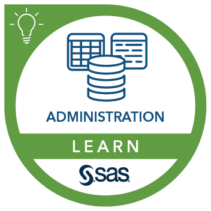
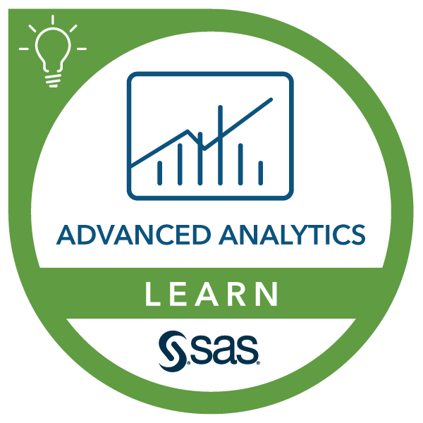
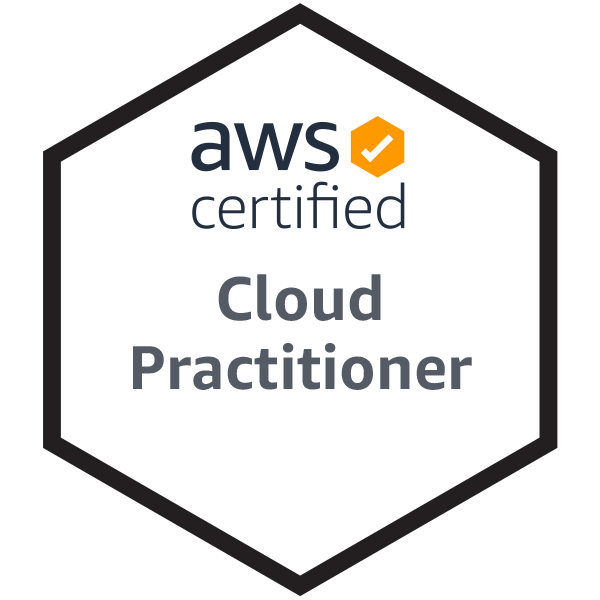

Hari Mummidi - Resume
Hari Mummidi - Resume
(See also my personal home page or download my resume.)
Current
Cloud Service Delivery Associate at AWS, since January 2022.
Previous Work
Trianz (Sep-2021 to Jan-2022)
Role and Responsiblities
- Administrate the SAS Grid 9.4 and 9.3 (25 Servers).
- Regular Health Checkup and Maintenance of the servers.
- SAS Platform User Support for various Ad Hoc User issues.
- User management on SAS Grid 9.4 M4 and 9.3 using SAS Management Console.
- New Database connections like DB2, Oracle, Snowfalke, Redshift from SAS Grid 9.4.
- Enabling cloud connections from SAS.
- Creating custome reports, SAS codes to users based on requests.
- Enabling API connection from Open source to SAS and SAS to 3rd party middleware applications.
- Performing Upgrades, License Renewals, SSL Certificate Renewals and Hot Fix Implementations.
- Working on Change, Incident and Problem Management for any new changes , issues and fixes on SAS environments respectively.
- Providing KT for New Resources.
- Work with SAS Tech Support and professional on issues and new upgrades.
Accenture (May-2018 to Sep-2021)
Role and Responsiblities
- Administrate the SAS Grid 9.4 (23 Servers).
- Administrate the SAS VIYA 3.5 Servers.
- Continuous improvement of the Platform performance by implementing multiple automated monitoring and Reporting Jobs
( using UNIX Shell, Base SAS/SAS Macros, Ansible and Python).
- Regular Health Checkup and Maintenance of the servers.
- Deploying and Monitoring Batch/Scheduled Jobs via Autosys.
- SAS Platform User Support for various Ad Hoc User issues.
- User management on SAS Grid 9.4 M4 using SAS Management Console and SAS VIYA using CLI/SAS Environment Manager.
- Creating custome reports, SAS codes to users based on requests.
- Enabling API connection from Open source to SAS and SAS to 3rd party middleware applications.
- Performing Upgrades, License Renewals, SSL Certificate Renewals and Hot Fix Implementations.
- Working on Change, Incident and Problem Management for any new changes , issues and fixes on SAS environments respectively.
- Providing KT for New Resources.
- Work with SAS Tech Support and professional on issues and new upgrades.
- SAP BO Admin and Developer.
- Worked on development of reports in Deski and Webi.
Education
I received a Bachelor's degree in Electrical and Electronics Engineering
from SNIST, Hyderabad in
2018.
Key Achievements
- Worked on upgrade for VA 8.5 to 8.5.1 on SAS VIYA 3.5 with end-to-end implementation and validation using Ansible playbooks.
- Migrated static reports from Solaris web server to SAS Middle tier Linux server to leverage the Apache service for hosting the reports.
- Worked on POC for report conversion from SAS to Python to reduce SAS dependency and license cost or user.
- API Connection from SAS VIYA to multiple applications like SharePoint to pull and modify data.
- Developed interactive reports for RITM and Incidents data using Python.
- Developed various Automation scripts using Unix and Python to monitor server health and jobs on Grid.
- Developed VB Macro excel sheet to get data from Oracle DB for Report Validation.
- Developed Python Module to automate the report validation with Database data before sending to client thus saving manual effort of 20 Hours per month.
- Created a Website using Python Flask Framework with Authentication for SLA Prediction dashboard.
Techincal Skills
- Programming Languages: SAS, Python, Unix, SQL, HTML, YAML
- SAS Tools: SAS VIYA , SAS ENTERPRISE GUIDE, SAS/BASE/MACROS, SAS DI Studio, SAS QKB.
- Databases: Oracle11g, Mysql, Sqlite3.
- Operating Systems: Red Hat Linux, Windows 7/10, Kali Linux.
- Devops Tools: Ansible, Docker Containers, Cloud Formation.
- Cloud Skills: Multiple AWS Services like AWS Managed Services, Quicksight, S3, EC2.
Certifications
Certificates from Data science Courses like Data Analysis with Python
, Introduction to Data Science
, Python for Data Science
Certificates from SAS Courses like SAS Grid Adminstartion ,
SAS VIYA Adminstration, SAS Programming Essentials
, SAS and Hadoop
, SAS Data Management Tools and Applications
, Introduction to Data Curation for SAS Data Scientists
, SAS Programming in SAS Grid
, Machine Learning Using SAS VIYA
, Advanced SAS Data Management Tools and Applications
, Leveraging the Power of the Quality Knowledge Base (QKB) in SAS Technology Components
, DataFlux® Data Management Studio: Understanding the Quality Knowledge Base


Certifications from AWS

Awards
Accenture Tech Star FY-21 Award.
Received PINACLE Game Change Award from Accenture.
ACE(ACCENTURE CELEBRATES EXCELLENCE) Award from Accenture
My Projects